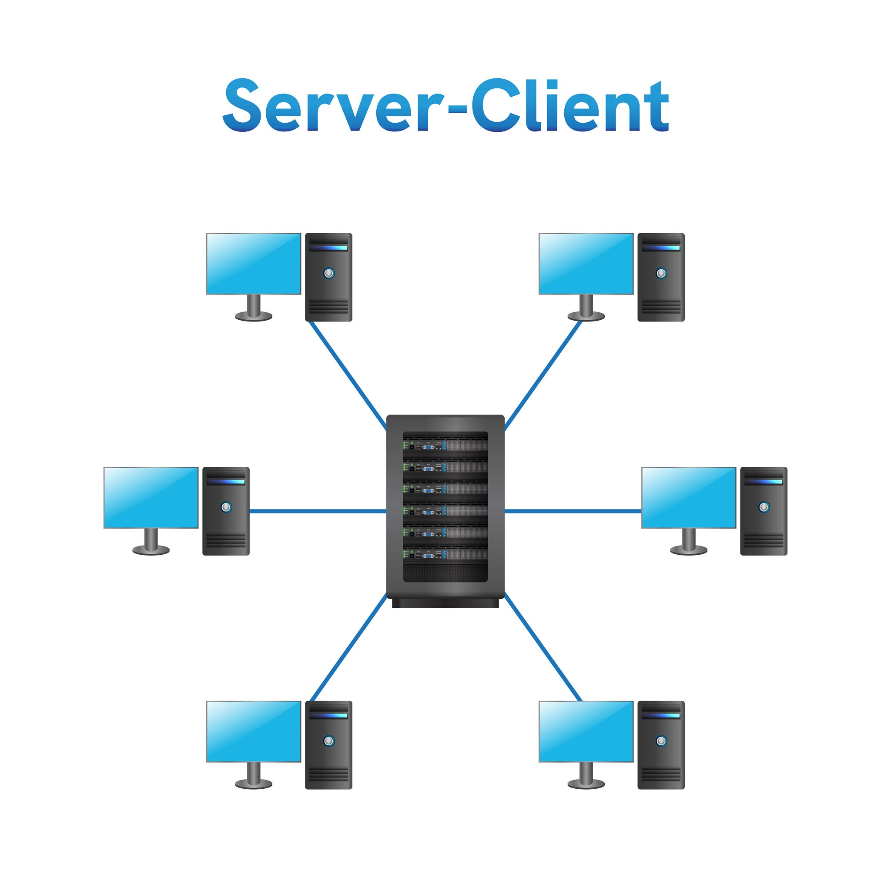

Sistemas de Gestión de Bases de Datos (SGBD)
1 Arquitectura Cliente - Servidor en SGBD
Esta lección teórica va acompañada de las prácicas: Práctica guiada: Instalación de MySQL 8.4 en Ubuntu Server 26.04 y Práctica guiada: Aplicación web con MySQL y PHP
En los Sistemas de Gestión de Bases de Datos Relacionales (SGBDR), el software no se ejecuta como una aplicación aislada de un solo bloque, sino bajo una arquitectura distribuida cliente-servidor

1.1 El Servidor de Base de Datos (Database Engine / Daemon)
Es el proceso o servicio que se ejecuta continuamente en segundo plano (ejemplo:
mysqlden Linux).Administra el almacenamiento físico en disco, la concurrencia de accesos, las transacciones, los permisos de seguridad y el procesamiento de sentencias SQL.
Requiere un equipo o sistema operativo activo para escuchar y responder a peticiones de red.
1.2 El Cliente de Base de Datos
Es la herramienta o programa que envía instrucciones SQL al servidor a través de la red y recibe los resultados estructurados.
Tipos de clientes más habituales:
Clientes CLI (Línea de comandos):
mysql,mysqlsh.Interfaces Gráficas (GUI): DBeaver, MySQL Workbench, phpMyAdmin.
Aplicaciones o conectores de código: Scripts y programas en PHP (PDO), Python (mysql-connector), Java (JDBC) o Node.js.
1.2.1 Aclaración Clave: El cliente y el servidor en la misma máquina
Estar en el mismo equipo no elimina la relación cliente-servidor. Cuando instalamos un servidor en Linux y ejecutamos en la consola sudo mysql o mysql -u root -p, estamos arrancando un programa cliente que se conecta al servicio servidor (mysqld).
Aunque no haya un cable de red de por medio, ambos programas son procesos independientes que se comunican internamente mediante la red local de loopback (127.0.0.1) o mediante un archivo de socket UNIX.
1.2.1.1 El cliente avanzado: MySQL Shell (mysqlsh)
Además del cliente clásico de línea de comandos (mysql), MySQL incluye MySQL Shell (mysqlsh), una aplicación cliente avanzada y moderna de interfaz de línea de comandos.
- Instalación independiente: Al igual que cualquier otro cliente,
mysqlshno viene incluido en el servidor por defecto y debe instalarse de forma explícita en la máquina (equipo cliente) desde la cual el administrador o desarrollador se va a conectar al servidor de bases de datos. - Modos de trabajo: Permite trabajar de manera interactiva utilizando SQL, pero también soporta lenguajes de scripting como JavaScript y Python, y es la herramienta estándar para la administración de arquitecturas avanzadas como MySQL InnoDB Cluster.
1.2.1.2 Requisitos y configuración para la conexión remota con clientes CLI (mysql o mysqlsh)
Para que una máquina cliente pueda conectarse con éxito a un servidor remoto utilizando herramientas como mysql o mysqlsh, se deben cumplir y configurar los siguientes aspectos previos:
Autorización del Host en la cuenta (
'usuario'@'host'): Como se detalla en el principio de bidimensionalidad de usuarios, el usuario con el que intentemos conectar debe estar creado expresamente con el Host autorizado coincidiendo con la IP de la máquina cliente (o un comodín/subred válido), y no solo paralocalhost.Configuración de red del servidor (
bind-address): Por defecto, muchos servidores vienen configurados para escuchar solo peticiones locales (127.0.0.1). Para aceptar conexiones desde fuera, el parámetrobind-addressen el archivo de configuración del servidor (mysqld.cnf) debe permitir la IP de la red o configurarse como0.0.0.0(todas las interfaces). en la práctica Instalando y Configurando MySQL en Ubuntu vemos cómo hacerlo en la prácticaApertura de Puertos (Firewall / Red): El puerto de servicio de MySQL (TCP 3306) debe estar abierto y accesible a través de la red (red local o VPN) entre ambas máquinas, asegurándose de que los cortafuegos (firewalls como
ufwen Ubuntu) no bloqueen el tráfico entrante a dicho puerto.
1.2.1.3 Ejemplos de uso de mysqlsh
Entrando por defecto: Si ejecutas mysqlsh a secas (o solo con el usuario/host):
mysqlsh -u root -pPor defecto,
mysqlsharranca en modo JavaScript (el prompt cambiará a algo como JS>). Una vez dentro, para poder lanzar consultas de bases de datos, tienes que escribir el comando de cambio de modo:\sqlJS> \sqlA partir de ahí, la consola cambia a modo SQL (SQL>).
Iniciar directamente la herramienta indicándolo mediante --sql:
Conexión local básica (modo SQL directo):
mysqlsh --sql -u root -pConexión remota especificando el host (-h o –host), usuario y puerto:
bash mysqlsh --sql -h 192.168.1.50 -P 3306 -u museo_app -p(Donde -P en mayúsculas indica el puerto TCP si es diferente al predeterminado).Conexión mediante URI (Connection String): Una de las ventajas de mysqlsh es permitir conexiones limpias mediante cadenas URI:
mysqlsh museo_app@192.168.1.50:3306 --sql
1.2.2 La Arquitectura Multicapa en Aplicaciones Web
Cuando introducimos un servidor web (Apache2) y un lenguaje de programación (PHP), el cliente del SGBD ya no es el navegador del usuario final, sino la propia aplicación PHP.
[ Navegador Cliente ]
|
| (Petición HTTP / Port 80)
v
[ Servidor Web: Apache2 ]
|
| (Ejecución del script)
v
[ Lenguaje: PHP (Módulo PDO) ] <-- Funciona como CLIENTE de MySQL
|
| (Protocolo MySQL / TCP 3306 ó Socket)
v
[ Servidor SGBD: MySQL 8.4 (mysqld) ]
|
v
[ Disco / Base de Datos: 'museo' ]🔗 Enlace a la Práctica: Puedes consultar la implementación real de esta arquitectura multicapa y el flujo completo de datos de un formulario en la sección “Idea general y arquitectura” de la Práctica Guiada: Aplicación web con Apache2, PHP y MySQL.
2 Instalación Inicial, Usuarios por Defecto y Primer Acceso
Al instalar MySQL 8.4 por primera vez en un sistema operativo como Ubuntu Server, el proceso de instalación crea de forma automática una cuenta de administración por defecto:
2.1 El Usuario Administrador por Defecto (root)
Identidad:
'root'@'localhost'.Método de Autenticación (
auth_socket): Por defecto en Ubuntu, la cuentarootde MySQL no utiliza contraseña al principio, sino el pluginauth_socket. Este plugin delega la autenticación en el propio sistema operativo: solo el usuario root del sistema de archivos (o alguien que ejecutesudo) puede entrar al cliente de MySQL ejecutando únicamente:
sudo mysqlEsto conectará el usuario root desde localhost al cliente de mysql que está dentro del servidor.
- Rol en el sistema: Es el superusuario con todos los privilegios (
ALL PRIVILEGES) sobre todo el motor.
2.2 Flujo habitual de administración:
Paso 1: Se instala el servidor de base de datos (
sudo apt install mysql-server).Paso 2: Se accede al servidor utilizando el cliente CLI con elevación de privilegios (
sudo mysql).Paso 3: Desde el cliente, el administrador crea la estructura de la base de datos y define nuevos usuarios específicos limitados para las aplicaciones finales.
3 Introducción a Usuarios, Host y Seguridad
A diferencia de los sistemas operativos tradicionales, donde un usuario se identifica únicamente por su nombre, en motores como MySQL la identidad de una cuenta es bidimensional:
\[\text{Cuenta} = \text{'Usuario'}@\text{'Host'}\]
'root', 'museo_app' | | Host | La dirección IP o interfaz desde la cual tiene permitido conectar. | 'localhost', '127.0.0.1', '192.168.1.50', '%' |3.1 Los tipos de Host más comunes
'localhost': Permite el acceso únicamente desde el propio equipo mediante el archivo de socket UNIX local.'127.0.0.1': Obliga a realizar la conexión mediante la interfaz TCP/IP de loopback local.'192.168.X.X': Restringe la autenticación a una máquina específica de la red local.'%': Comodín (wildcard) que permite al usuario conectarse desde cualquier dirección IP remota.
3.2 El Principio de Mínimo Privilegio (Least Privilege)
Nunca se deben utilizar las credenciales del usuario root para conectar una aplicación web (PHP, Python, Java) a la base de datos. Si un atacante lograra explotar una vulnerabilidad en la aplicación web, obtendría control total sobre todo el motor de bases de datos.
Lo correcto es crear un usuario dedicado para la aplicación, restringido a su IP de origen y con permisos (Grants) estrictamente limitados a las operaciones requeridas.
🔗 Enlace a la Práctica: En la sección “Crear un usuario específico para la aplicación” de la práctica guiada, se muestra el ejemplo práctico de cómo crear el usuario
'museo_app'@'127.0.0.1'con contraseña y cómo limitarle los permisos otorgando únicamente las operacionesSELECTeINSERTsobre la tablaObjetos:CREATE USER 'museo_app'@'127.0.0.1' IDENTIFIED BY 'ContraseñaSegura'; GRANT SELECT, INSERT ON museo.Objetos TO 'museo_app'@'127.0.0.1';
Para interactuar con la base de datos con el nuevo usuario:
mysql -u museo_app -pdonde -u significa usuario y -p indica que se autentica por password.
Como solo le hemos dado a este usuario acceso desde la dirección lookback, sólo podremos conectarnos desde el servidor. Si estamos en otra máquina, primero tendremos que conectarnos al servidor mediante SSH para poder usar ese usuario.
Si creamos un usuario con acceso desde cualquier dirección de la red 10.0.20.0/24:
CREATE USER 'museo_app'@'10.0.20.0/24' IDENTIFIED BY 'mypassword_here';
GRANT SELECT, INSERT ON museo.Objetos TO 'museo_app'@'10.0.20.0/24';Esta instrucción crea una nueva cuenta de usuario en el servidor de bases de datos. Sus componentes son:
CREATE USER: Es la orden principal de SQL para dar de alta una nueva identidad en el sistema de seguridad de MySQL.'museo_app'(El Usuario): Es el nombre con el que se identificará la cuenta o aplicación que va a conectarse.'10.0.20.0/24'Define la subred de origen permitida. Mediante notación CIDR (/24), se indica que este usuario exclusivamente podrá intentar conectarse desde cualquier dirección IP comprendida en el rango de la red local 10.0.20.1 hasta la 10.0.20.254. Si se intentara conectar desde fuera de esta subred, el servidor rechazaría la conexión de inmediato, incluso sabiendo la contraseña.IDENTIFIED BY: Es la cláusula que indica que la autenticación se realizará mediante una contraseña tradicional de texto (que luego el motor encripta internamente).
‘mypassword_here’: Es la contraseña que la aplicación o el usuario deberá proporcionar obligatoriamente al autenticarse.
GRANT: Es la orden SQL utilizada para conceder permisos o privilegios (privileges) a una cuenta de usuario.SELECT, INSERT(Los Privilegios):SELECT: Permite consultar/leer registros de la tabla (equivalente a operaciones de lectura o búsquedas).INSERT: Permite añadir nuevos registros o filas a la tabla (equivalente a operaciones de creación o guardado).(Nota: Al separar por comas, se le están concediendo exclusivamente estos dos permisos y se le niegan por completo otros como
UPDATE,DELETEo permisos administrativos, cumpliendo estrictamente el principio de mínimo privilegio).
ON museo.Objetos(El Objeto de la base de datos): Especifica el ámbito exacto sobre el que aplican los permisos anteriores. En este caso, se restringen únicamente a la tablaObjetosque se encuentra dentro de la base de datosmuseo. No tiene acceso a ninguna otra tabla ni base de datos del servidor.TO: Cláusula que indica a qué usuario van destinados esos privilegios.'museo_app'@'10.0.20.0/24': El Usuario y Host de origen (ip desde la que se conecta)Identifica de forma unívoca a la cuenta receptora de los permisos.
Ahora podremos usar el CLI en la máquina del usuario para conectarnos a la base de datos:
mysql -h 10.0.20.101 -u museo_app -pdonde -h significa host y a continuación ponemos la ip del servidor al que nos estamos conectando.
Es importante notar que si hacemos exactamente esto y creamos dos usuarios con el mismo nombre de usuario pero distinta dirección de conexión, actúan como usuarios totalmente distintos, con privilegios distintos.
4 Interfaces de Escucha y Red (bind-address y Puertos)
Para que el servidor acepte o rechace conexiones de red, entran en juego los parámetros del protocolo TCP/IP:
Puerto de Servicio: Punto lógico de comunicación. Por defecto, MySQL escucha en el puerto TCP 3306.
Dirección de Escucha (
bind-address): Indica qué tarjetas de red o interfaces del servidor procesarán tráfico entrante:127.0.0.1(Loopback): El servidor ignora las peticiones que vengan del exterior y solo escucha las internas de la propia máquina.0.0.0.0(Todas las interfaces): Permite recibir peticiones procedentes de cualquier tarjeta de red o IP pública/privada configurada.
5 Archivos de Configuración y Protección de Credenciales
Un SGBD y sus aplicaciones asociadas utilizan archivos de texto plano para ajustar sus parámetros.
5.1 Configuración del Servidor SGBD
En sistemas Linux/Ubuntu, los archivos de configuración se estructuran modularmente en
/etc/mysql/(por ejemplo,mysqld.cnf).Cualquier modificación en estos archivos requiere reiniciar el demonio (
sudo systemctl restart mysql) para aplicar los cambios.
5.2 Configuración de la Aplicación y Seguridad en el Sistema de Archivos
Cuando un script de backend (como PHP) necesita guardar la contraseña de la base de datos, el archivo de configuración nunca debe alojarse en la carpeta pública del servidor web (como /var/www/html/). Si el motor de PHP fallase o fuera malconfigurado, Apache podría servir la contraseña como texto plano a cualquier visitante en Internet.
Por ello, se utiliza la regla de almacenamiento externo y permisos octales reducidos en Linux:
Guardar el archivo en
/etc/(ejemplo:/etc/museo/config.php).Asignar la propiedad a
rooty al grupo del servidor web (www-data).Aplicar permisos de lectura estricta (
chmod 640):Propietario (
root- 6): Lectura y escritura.Grupo (
www-data- 4): Solo lectura (para que el servidor web pueda ejecutar la conexión).Otros (0): Sin ningún tipo de acceso.
🔗 Enlace a la Práctica: Consulta el apartado “Crear la conexión con MySQL mediante PDO” de la práctica para ver la aplicación técnica de
chown root:www-dataychmod 640sobre el archivo de credenciales.
6 Estructura Interna: Bases de Datos de Sistema y de Usuario
Al instalar el motor, este crea de forma automática un catálogo del sistema con metadatos indispensables para su funcionamiento:
6.1 Esquemas del Sistema
mysql: Contiene las tablas internas del motor, comomysql.user(donde se guardan los usuarios, sus contraseñas encriptadas y sus permisos globales).information_schemayperformance_schema: Vistas de solo lectura con metadatos sobre la estructura de tablas, tipos de datos, índices y métricas de rendimiento en tiempo real.
6.2 Esquemas de Usuario
Son las bases de datos creadas explícitamente para almacenar los datos de un negocio o aplicación (ejemplo: CREATE DATABASE museo;).
7 Modelado de Datos y Restricciones de Integridad
En la capa teórica del diseño de tablas, la base de datos es la encargada de mantener la integridad de los datos mediante restricciones (constraints). Las comprobaciones de las aplicaciones web (validaciones de formularios) ayudan al usuario, pero la base de datos es la última línea de defensa.
7.1 Resumen Teórico de Restricciones y Tipos de Datos Avanzados
|——————|————————————-|——————| | Restricción / Tipo | Función Teórica | Aplicación en el Modelo del Museo | | PRIMARY KEY | Identificador único irrepetible de cada fila. Garantiza que no haya duplicados y crea un índice primario de búsqueda rápida. | id_objeto INT UNSIGNED AUTO_INCREMENT | | UNIQUE | Garantiza que no existan dos filas con el mismo valor en una columna clave alternativa. | codigo_inventario VARCHAR(50) (ej. ‘MED-0001’) | | CHECK | Expresión lógica que debe cumplirse obligatoriamente para que el INSERT o UPDATE sea aceptado. | CHECK (mes_inicio BETWEEN 1 AND 12) | | ENUM | Lista cerrada de valores permitidos. Cualquier otro texto es rechazado. | era ENUM('a.C.', 'd.C.') | | NULL | Representa la ausencia de valor o información desconocida (se diferencia claramente de 0 o de una cadena vacía ""). | Campos opcionales de datación histórica. |
🔗 Enlace a la Práctica: Revisa la sentencia SQL de creación de la tabla en el apartado “Crear la base de datos y la tabla Objetos” de la práctica para observar cómo se traducen estos conceptos en una tabla real de MySQL.
8 Interacción Segura mediante PDO y Consultas Preparadas
Cuando un script de backend envía consultas a la base de datos con información que proviene del usuario final, existe un grave riesgo de Inyección SQL (SQLi) si se concatenan cadenas de texto directamente.
8.1 ¿Qué son las Consultas Preparadas?
Una consulta preparada compila la estructura lógica de la sentencia SQL en el servidor de base de datos antes de recibir los valores introducidos por el usuario. De esta forma, el motor trata los datos únicamente como valores literales, impidiendo que código malicioso altere la orden SQL original.
1. Preparación (SQL estático): INSERT INTO Objetos (nombre) VALUES (:nombre)
2. Asignación de Parámetros: :nombre = "Manuscrito' OR '1'='1"
3. Ejecución Segura: El motor inserta el texto exacto sin interpretar la comilla.🔗 Enlace a la Práctica:
Ver el script
guardar.phppara comprender la inserción de datos usandoPDO::prepare()y la conversión de campos vacíos aNULL.Ver el script
buscar.phppara observar cómo se realizan búsquedas dinámicas conbindValue()filtrando por clave primaria (id_objeto) o clave única (codigo_inventario).
9 Resumen Integrado de Conceptos
┌────────────────────────────────────────────────────────────────────────┐
│ UBUNTU SERVER 26.04 │
│ │
│ [ Servidor Web Apache2 ] │
│ │ │
│ ├─► /var/www/html/museo/ (Archivos públicos: index, html, css) │
│ │ │
│ [ Módulo PHP + PDO ] │
│ │ │
│ ├─► /etc/museo/config.php (Credenciales protegidas: chmod 640) │
│ │ │
│ ▼ (Conexión TCP/IP 127.0.0.1:3306) │
│ │
│ [ SGBD MySQL 8.4 (mysqld) ] │
│ │ │
│ ├─► Usuario App: 'museo_app'@'127.0.0.1' (Permisos SELECT, INSERT)
│ └─► Base de Datos: 'museo' ──► Tabla: 'Objetos' │
└────────────────────────────────────────────────────────────────────────┘